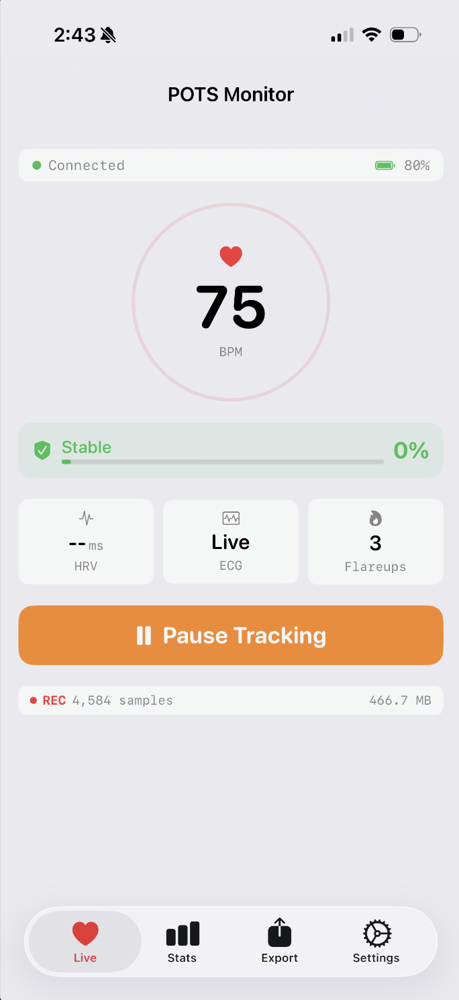
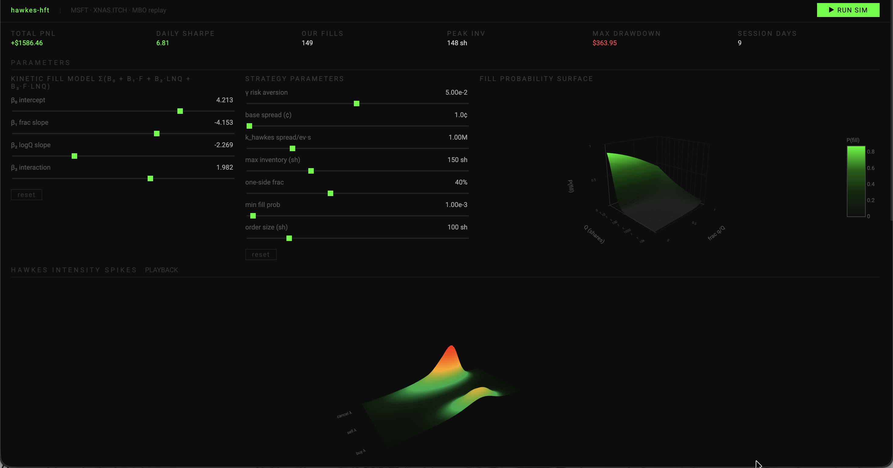

Projects
fwubbo: Personal Dashboard Wrapper
A personal dashboard I made for daily use. Streams Claude API to allow for modifications to widgets and creating new widgets and themes. Useful for saving all the visualization tools I've ever made in one place!
GitHub
GitHub

ML POTS Flareup Predictor
Created full stack iOS app for my lovely girlfriend, connecting via BLE to collect and organize 1M+ entries of live heart rate and ECG data and trained boosted tree classifier on collected data, achieving 70%+ flareup detection accuracy 15 minutes in advance
Github
Github

Self-Excitatory Hawkes Process + Kinetic Theory HFT Model
Engineered on 2 weeks of MSFT L3 data for kinetic queue prediction market making strategy, achieving 49% PnL, and calibrated Hawkes process strategy with MLE and achieved 65% win rate on 54M+ MBO events
Github
Github

Quantum Walk BQP Trading Model
Mid-cap macro equity trading model combining BQP and discrete quantum walk strategies proposed in papers and achieved 80%+ CAGR and 1.29 Sharpe with quantum stochastic walk asset correlation position sizing
Quantconnect
Quantconnect

Mandelbrotian Volatility Options ML Model
Engineered a fractal regime-detection OTM options strategy with Hurst exponents (DFA), Hill tail-index, and multifractal spectral width to classify volatility regimes achieving 60+% CAGR and 1.18 Sharpe across 105 trades from 2020-2025.
Quantconnect
Quantconnect

Darwin: Agentic Evolving GPT
Developed a proof-of-concept for a Darwin-Gödel model using genetic algorithms applied to GPT agents that iteratively modify and improve their own training code. Features a live chat window enabling model requests for new datasets and library upgrades. I plan to continue this project soon with finetuning 30B models and removing the API calls.
GitHub
ArXiV
GitHub
ArXiV

Batstick: Smart Walking Aid
Jointly designed an walking aid for the visually impaired in collaboration with VIBUG. Device converted ultrasonic readings into an array of vibration motors reading the position of objects with over 80% accuracy. Featured on Fox News and placed Top 12 at the National Innovator Challenge.

Automated Intersection Management for Self-Driving Vehicles
Designed an AI-based intersection management system improving simulated traffic flow by 50% using Pygame, Q-learning, and a Double Q-table approach. Built a physical Raspberry Pi car with YOLOv3-mini and OpenCV for lane detection and motor control.
GitHub
GitHub

Skills
Java
Python
C/C++/C#
HTML/JS/CSS
Tensorflow/Pytorch
Postgres
AWS
Docker
React
Typescript
Pandas
Node.js
JUnit
JIRA
About Me
I like coding, art, and animation, and I work on some AI and 2D/3D animation projects in my free time. I hope to get better each and every day to create incredible works.

You can contact me at: henryyjiang42@gmail.com | (850) 387-6688
Favorite Anime: Blue Lock
Favorite Manga: Tokyo Ghoul
Currently Watching: Witch Hat Atelier, Re:Zero, Dorohedoro
Last Completed: Fire Force - 6.9/10
Favorite Song: Shelter - Porter Robinson
Favorite Music Artist: Ado
Favorite Games: Nier: Automata, Overwatch, Limbus Company
Favorite Manga: Tokyo Ghoul
Currently Watching: Witch Hat Atelier, Re:Zero, Dorohedoro
Last Completed: Fire Force - 6.9/10
Favorite Song: Shelter - Porter Robinson
Favorite Music Artist: Ado
Favorite Games: Nier: Automata, Overwatch, Limbus Company